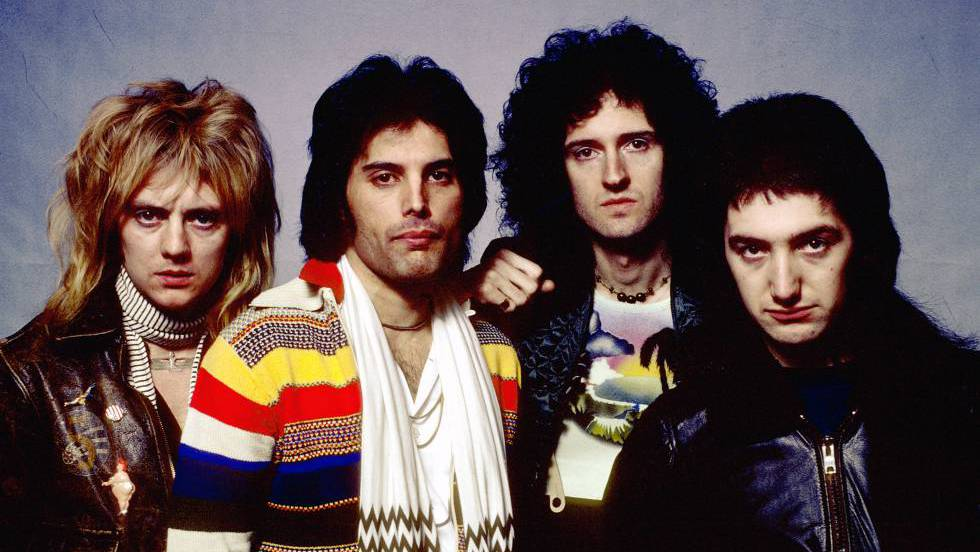
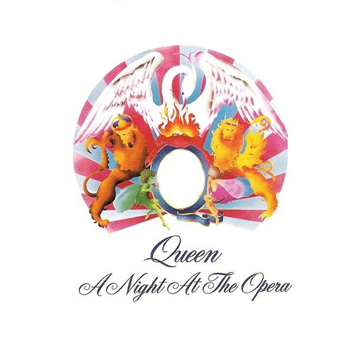
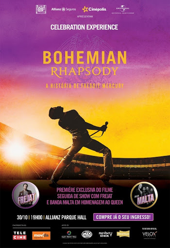

Queen foi uma banda britânica de rock, fundada em 1970 e ativa, sob sua formação clássica, até 1991. O grupo, formado por Brian May (guitarra e vocais), Freddie Mercury (vocais e piano), John Deacon (baixo) e Roger Taylor (bateria e vocais) é frequentemente citado como um dos expoentes do seu estilo, também sendo um dos recordistas de vendas de discos a nível mundial. A música da banda se destacou por ser altamente eclética, variando entre várias vertentes do rock.
A banda surgiu originalmente do trio Smile, que continha os integrantes Brian May, Roger Taylor e o baixista Tim stafell.Com o fim do conjunto, Freddie Mercury e John Deacon, juntamente com May e Roger, estabeleceram a formação de um novo grupo em meados de 1970. Os seus dois primeiros álbuns, Queen e Queen II, tiveram pouco alcance de sucesso, mas a popularidade da banda começou a aumentar a partir do seu single Killer queen, primeiro single do que em breve seria o terceiro disco da banda, Sheer Heart Attack, a música fez sucesso não só no Reino Unido mas ao redor do mundo. A música chegou a segunda posição das paradas britânicas e o décimo primeiro lugar da Billboard nos EUA.
Seu lançamento seguinte foi A Night at the Opera, que teve um grande alcance com singles de sucesso como Love of my life, bohemian rhapsody, You’re my best friend e outros. Mais tarde, a popularidade do quarteto estendeu-se com News of the World, devido aos hits "We Will Rock You" e "We Are the Champions", bem como com "Crazy Little Thing Called Love" e "Another One Bites the Dust", de The Game, lançado em 1980.
Durante a década de 1980, o Queen passou a adotar sintetizadores nas suas músicas, e apesar de alguns sucessos como "Under Pressure", a banda recebeu fortes críticas da mídia especializada, perdeu grande parte de sua popularidade em território norte-americano, e passou por crises internas. Em meio às críticas, a banda ainda lançou sucessos: O álbum The Works (1984) conteve os singles "Radio Ga Ga" e "I Want to Break Free", que alcançaram notoriedade no Reino Unido e em países da América do Sul, como o Brasil e Argentina. Em 1985, o conjunto realizou uma das suas performances mais memoráveis no evento Live Aid, e em 1986 a última turnê.
Em 1987, o vocalista Freddie Mercury contraiu o vírus do HIV. Com isso, a banda continuou produzindo trabalhos que se tornaram os últimos registros em vida de seu cantor.The Miracle e Innuendo foram melhor recebidos que os anteriores, e também ganharam avaliações mais positivas após a morte de Freddie. Brian, Roger e John trabalharam em algumas faixas arquivadas durante dois anos e, com isso, foi lançado o último trabalho inédito do quarteto, Made in Heaven. Em 1997, o baixista John Deacon aposentou-se do mundo musical. Nos anos seguintes, Brian May e Roger Taylor seguiram carreiras a solo, tocaram com vários músicos convidados e, com o repertório do Queen, chegaram a se apresentar com artistas como Elton John. Como shows com o nome da banda, destacam-se as parcerias feitas com Paul Rodgers e Adam Lambert, com quem formaram, respectivamente, os supergrupos Queen + Paul Rodgers (entre 2004 a 2009) e Queen + Adam Lambert (de 2011 aos dias atuais). A banda já vendeu mais de trezentos milhões de discos ao redor do mundo, tendo lançado quinze álbuns inéditos, várias coletâneas e trabalhos em vídeo. O grupo foi incluído no Rock and Roll Hall of Fame em 2001 e todos os seus integrantes foram introduzidos ao Songwriters Hall of Fame em 2003. Além disso, ganhou uma estrela no Passeio da Fama em Hollywood em 2005 e é apontado como influência para vários artistas do cenário rock e pop, bem como foi tema do musical We Will Rock You e do filme Bohemian Rhapsody, de 2018.
Freddie Mercury era formado em designer gráfico. Já o baterista Roger Taylor ingressou no curso de odontologia,mas acabou se formando em ciências biológicas.O baixista John Deacon é engenheiro eletrônico e costumava construir equipamentos para a banda, como o amplificador Deacy Amp, utilizado desde o segundo álbum, Queen II. Já o guitarrista Brian May talvez seja o portador do currículo mais impressionante: PhD em astrofísica, ele lançou um livro sobre o tema, foi nomeado reitor da Universidade Liverpool John Moores, em 2007, e ainda atuou como pesquisador colaborador da NASA